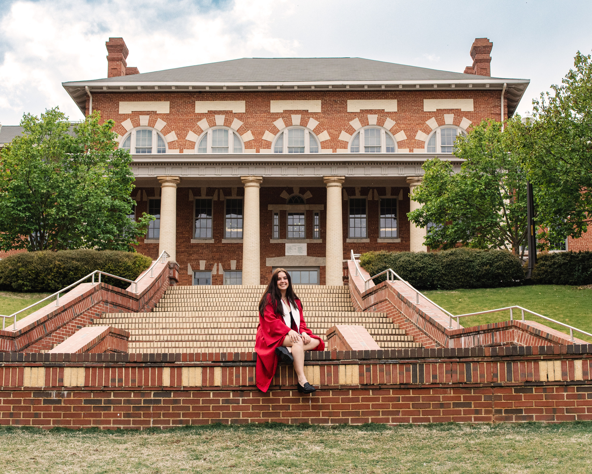

I’m an environmental communicator and operations partner based in
Raleigh, North Carolina. My work sits at the intersection of
policy, data, and care—helping teams surface the human stories
inside complex environmental programs.
I’m energized by collaborations that let me embed with
mission-driven teams and translate technical insights into plain
language for the communities they serve.
Explore the floating keepsakes below to see how creative practice,
place-based care, and operational rigor intertwine in my work.
These artifacts capture the blend of community care, operations,
and creativity I bring to every collaboration. Tap an image to see
the story waiting underneath.
Coastal groundingClick to open
The shoreline reminds me why environmental storytelling
matters—North Carolina’s natural beauty is both fragile and
worth celebrating. These scenes keep me committed to
protecting the ecosystems my neighbors call home.
Cary park companionsClick to open
I frequently meet these ducks while walking Cary’s parks. They
nudge me to look closely at everyday wildlife and weave local
stewardship into every project brief.
Raleigh parks internshipClick to open
During my Raleigh Parks & Recreation internship I tracked how
funding choices ripple through habitats and visitor experience.
Immersing in that work sharpened my perspective on resource
allocation and community accountability.

First-gen milestoneClick to open
As a first-generation college graduate, I carry the lessons of
student government, campus jobs, internships, and civic
organizing into every collaboration. My education is rooted in
community participation.
Seeking sea lifeClick to open
Whenever travel permits, I sign up for nature-forward
excursions like snorkeling. Living in Raleigh means ocean life
feels distant, so these moments recharge my curiosity and
deepen my respect for marine ecosystems.
On the road with authorsClick to open
Book tours fuel my travel itinerary. Meeting Roxane Gay in
Washington, D.C. reinforced how justice-centered narratives
shape my own storytelling practice and keep me connected to a
broader movement community.